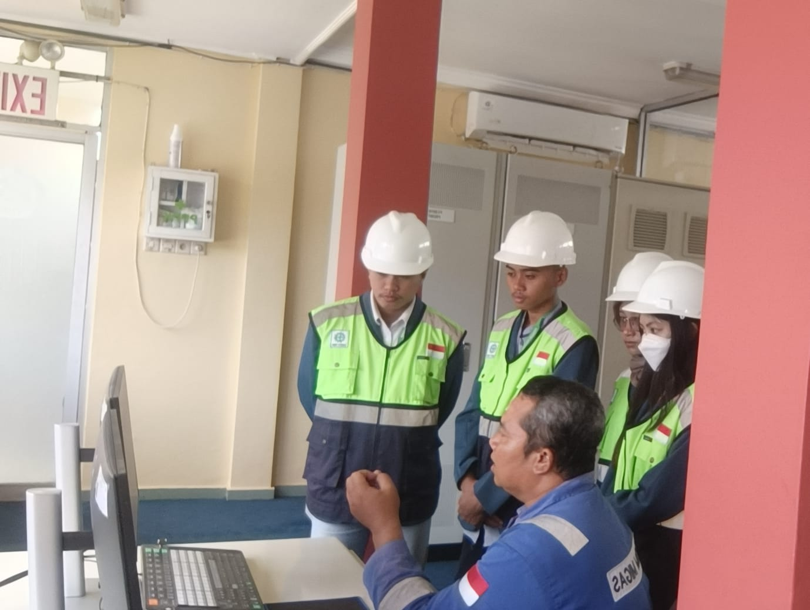

DETAIL EXPERIENCE INTERNSHIP
InternshipWater Treatment Plant
PPSDM MIGAS Cepu
Completed the internship at PPSDM MIGAS Cepu by conducting field orientation, collecting operational distribution pump data, and analyzing electrical energy efficiency using a Variable Speed Drive (VSD) for the final report.
ACTIVITY
Detail Activities
- Data Collection & Processing: Collected and cleaned operational data regarding electrical energy consumption from water distribution pumps at the Water Treatment Plant to evaluate operational efficiency.
- Comparative Analysis: Evaluated and compared energy performance between pump operations without VSD (Variable Speed Drive) and with VSD based on real-world operational data.
- Performance Insight: Discovered that implementing VSD significantly reduced energy consumption from 166.15 kWh to 94.51 kWh, achieving an 43.12% energy saving.
- Financial Impact: Identified potential electricity cost savings of approximately Rp405,462.62 per day through data-driven operational optimization.
DOKUMENTASI
Bukti kegiatan

Water Treatment Plant
Dokumentasi kegiatan internship di PPSDM MIGAS Cepu.
LAPORAN
Laporan kegiatan
Laporan kegiatan internship sudah tersedia dan dapat dibuka melalui tombol berikut.
Buka laporan PDF